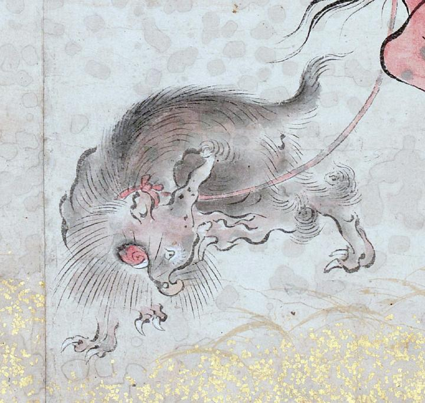

犬のような一角の化物。顎から長いひげが生えており、全体がうず状の茶毛で覆われている。首に赤い紐をまき、口から牙が生えている。やや上の方を見ている。
著作者：吉光／出典：親書誌：U426_nichibunken_0057：百鬼ノ図；ヒャッキノズ／日付：2006／資源識別子：U426_nichibunken_0057_0002_0006
Copyright (c)2010- International Research Center for Japanese Studies, Kyoto, Japan. All rights reserved.